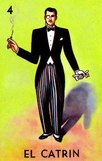

"Con su traje bien planchado, el Catrín siempre elegante, y su mirada arrogante."

The "El Catrín" card in Lotería represents elegance and sophistication. Depicted as a well-dressed man with a confident, proud look, the Catrín symbolizes high class and fashion. It reflects the refined style of the early 20th century, making it one of the most iconic cards in the game.
Regresar